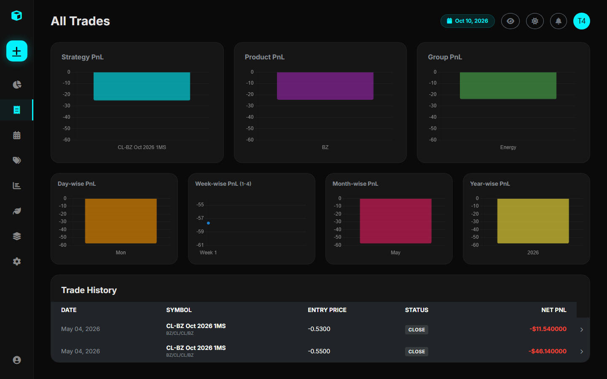

Position Adjustments & Audit Trail¶
Rather than storing a static contract count that is destructively overwritten, the Trade Journal implements an Event-Sourced Position Audit Log via the PositionAdjustment model.

1. Why Position Adjustments Matter¶
Real-world institutional trading rarely consists of opening 10 contracts and liquidating all 10 contracts in one transaction. Professional desks constantly: - Scale In: Add to winning positions as confirmations occur. - Scale Out (De-risk): Partially reduce size at first targets while trailing stops on the remainder. - Average Down / Rebalance: Adjust positions across changing price regimes.
A static database schema destroys historical fill context. The Trade Journal's audit trail preserves every action in chronological order.
2. The Four Adjustment Actions¶
| Action | size_change |
PnL Effect | Status Transition |
|---|---|---|---|
Open |
Positive (\(+N\)) | None (Establishes position) | Trade status \(\rightarrow\) Open |
Add |
Positive (\(+N\)) | None (Blends entry price) | Trade status \(\rightarrow\) Open |
Reduce |
Negative (\(-N\)) | Locks in Realized PnL for closed lots | Trade status \(\rightarrow\) PartiallyReduced |
Close |
Negative (\(-N\)) | Locks in final Realized PnL | Trade status \(\rightarrow\) Closed |
3. Mathematical Formulas¶
Volume-Weighted Average Entry Price (avg_entry_price)¶
When positions are added at varying prices, the platform calculates the volume-weighted average entry price across all Open and Add adjustments:
Where: - \(S_i\) is the position size change of adjustment \(i\). - \(P_i\) is the fill price of adjustment \(i\).
Realized PnL on Reductions (pnl)¶
When an existing position is partially reduced or closed, realized profit or loss is calculated using the weighted entry price and contract point value multiplier:
For Long Trades: $\(\text{Realized PnL} = (P_{\text{exit}} - \bar{P}_{\text{entry}}) \times \text{Multiplier} \times Q_{\text{reduced}}\)$
For Short Trades: $\(\text{Realized PnL} = (\bar{P}_{\text{entry}} - P_{\text{exit}}) \times \text{Multiplier} \times Q_{\text{reduced}}\)$
Where:
- \(P_{\text{exit}}\) is the reduction/closure price.
- \(\text{Multiplier}\) is resolved from Products.xlsx.
- \(Q_{\text{reduced}}\) is the quantity of contracts closed.
4. State Recalculation Engine¶
If an adjustment record is edited or deleted, services.recalculate_trade_state(trade_id) automatically re-simulates all historical adjustments in chronological order (timestamp ASC). It recalculates running open sizes, blend prices, and updates all downstream PnL figures.